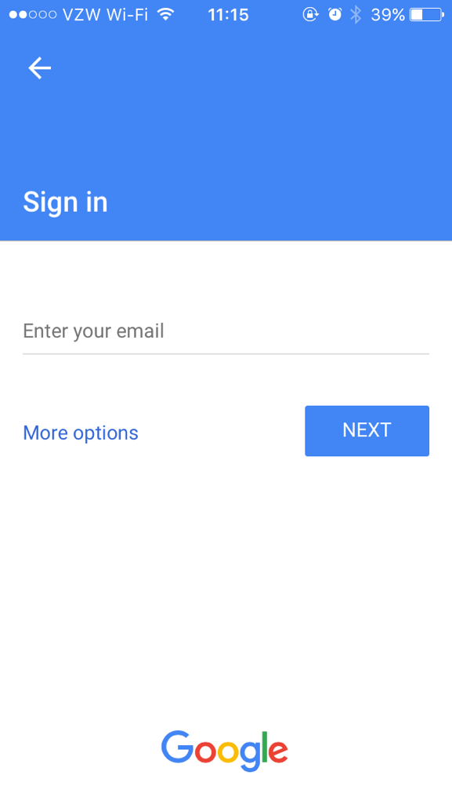
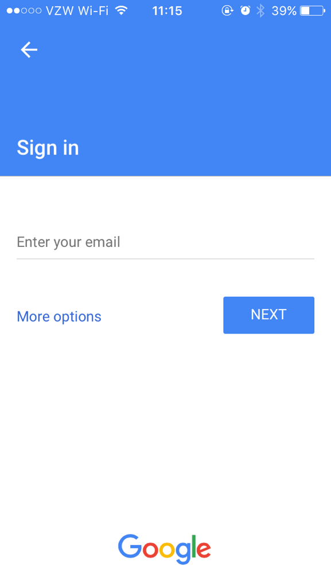

Typical Appearance
A typical appearence of Web can be seen in client-side applications where an embedded page view is present. Usually in a window that can be manipulated, with sizing options available to change width and height.
An example of a typical appearence of a web object can be seen here with the Wells Fargo and Google client for iOS:
 

Typical Behavior
If a component is sufficiently widespread that some form of typical behavior can be described, describe it here. As with the “Typical Appearance” section, if there is no such consistent behavior, say as much and direct the reader to the platform-specific sections.
Helpful subsections include:
Events
An event is something that can happen to a user interface component. They are both conceptual and highly concrete in that events very frequently translate directly into a user interface component’s API.
The most relevant button event is the click. A click event indicates that the user has
triggered the button. Secondary events include hover, indicating that a pointing device is explicitly
within the button’s bounds.
State Diagram
A state diagram indicating the actions and states of a user interface component.
This is most likely an image. Bonus props if you use SVG.
And also, a state diagram implies, well, states. So be sure to describe them. Note also that there will usually be overlap between a component’s events and its state diagram. A sufficiently detailed state diagram, however, may have more activities than the “public” events that can be reported by a component.
Most button designs have the following states. The enabled and disabled states can be
viewed as “dormant” button states—they are the only states that a button can have when a user is not interacting with
it. The enabled state means that a user can interact with it, while the disabled
state means that a user cannot do so.
When a button is enabled, additional states may be triggered. Not all states are present in all button
implementations, but in general they are:
hover: For platforms with an explicit pointing element, positioning that element over a button may change the button’s appearance. This provides a form of feedback that states that the button will respond if additional activity is performed.armed: If the user initiates button-triggered behavior, such as a click on mouse-capable systems, the button may enter a state indicating that it is ready to be invoked. Many button implementations allow an “out” from this state, in case the user changes his or her mind in mid-action.
Component in Action
Embedded or linked video (by you or by others [and if by others give credit]) showing the component in action.
For components that are available on a web platform, you can embed an actual component right here, such as:
Variants
Web views vary greatly in their appearence and uses across platforms and services. Almost all pages differ from each other in ways to reflect the web services content.
- iOS web views are much different than their desktop/laptop counterparts. They tend to bring up full page inside their app, of which these apps frequently defer to what is really a login web page in the given service, but the login looks like it is "inside" the app
- Mac
Priority Metrics
Talk about the five usability metrics in relation to this component. Not all components will have the same metric priorities. For example:
Because the button is such a fundamental part of virtually every user interface available today, it can be said that all usability metrics are equally important for this component. Users who are seeing a button in a given platform for the first time must not have any issues recognizing it and knowing what to do with it (learnability). The high priority of learnability also implies that memorability is a given.
Users must also never experience undue delays with using a button (efficiency), particularly because using a button almost always involves an instantaneous, immediate-result action. Users should almost never trigger a button by mistake (errors)—especially buttons whose actions result in significant changes to data or the real world.
If any metric at all can be considered as a “low priority” for buttons, it would be satisfaction. The button is such a utilitarian component that “fun” or “enjoyment” is hardly associated with its use. One exception to this prioritization may be for buttons in applications whose primary metric is satisfaction (e.g., games, entertainment). As a part of that overall system, making buttons “fun” may then become more important than in other situations.
Key Characteristics
This section is for describing “what makes for a good your component here?” Most likely, this is an amalgam of guidelines documents and platform-independent interaction design principles.
Feedback
Perhaps the most important interaction design principle that a button must follow is feedback. Users must never doubt whether:
- they did positively trigger a button (and thus its associated action)
- they successfully cancelled the triggering of a button, due to changing their minds midway through the action that triggers the button